- 00 开篇词 微服务，从放弃到入门.md.html
- 01 到底什么是微服务？.md.html
- 02 从单体应用走向服务化.md.html
- 03 初探微服务架构.md.html
- 04 如何发布和引用服务？.md.html
- 05 如何注册和发现服务？.md.html
- 06 如何实现RPC远程服务调用？.md.html
- 07 如何监控微服务调用？.md.html
- 08 如何追踪微服务调用？.md.html
- 09 微服务治理的手段有哪些？.md.html
- 10 Dubbo框架里的微服务组件.md.html
- 11 服务发布和引用的实践.md.html
- 12 如何将注册中心落地？.md.html
- 13 开源服务注册中心如何选型？.md.html
- 14 开源RPC框架如何选型？.md.html
- 15 如何搭建一个可靠的监控系统？.md.html
- 16 如何搭建一套适合你的服务追踪系统？.md.html
- 17 如何识别服务节点是否存活？.md.html
- 18 如何使用负载均衡算法？.md.html
- 19 如何使用服务路由？.md.html
- 20 服务端出现故障时该如何应对？.md.html
- 21 服务调用失败时有哪些处理手段？.md.html
- 22 如何管理服务配置？.md.html
- 23 如何搭建微服务治理平台？.md.html
- 24 微服务架构该如何落地？.md.html
- 25 微服务为什么要容器化？.md.html
- 26 微服务容器化运维：镜像仓库和资源调度.md.html
- 27 微服务容器化运维：容器调度和服务编排.md.html
- 28 微服务容器化运维：微博容器运维平台DCP.md.html
- 29 微服务如何实现DevOps？.md.html
- 30 如何做好微服务容量规划？.md.html
- 31 微服务多机房部署实践.md.html
- 32 微服务混合云部署实践.md.html
- 33 下一代微服务架构Service Mesh.md.html
- 34 Istio：Service Mesh的代表产品.md.html
- 35 微博Service Mesh实践之路（上）.md.html
- 36 微博Service Mesh实践之路（下）.md.html
- 微博技术解密（上） 微博信息流是如何实现的？.md.html
- 微博技术解密（下）微博存储的那些事儿.md.html
- 结束语 微服务，从入门到精通.md.html
- 阿忠伯的特别放送 答疑解惑01.md.html
- 阿忠伯的特别放送 答疑解惑02.md.html
- 捐赠
28 微服务容器化运维：微博容器运维平台DCP
微服务容器化运维系列的前两期，我给你详细介绍了微服务容器化后如何运维的几个关键问题：镜像仓库、资源调度、容器调度、服务编排，这些问题的产生都是因为微服务部署的节点从一台台物理机或者虚拟机变成了一个个容器，运维模式发生了根本性的变化。此时，容器运维平台也就应运而生。
微博的业务从2013年就开始进行容器化，2015年为了应对春晚以及突发热点事件带来的峰值流量，开始引入阿里云；同时也为了适应业务的发展和运维方式的变化，在2015年底开始研发新的容器运维平台DCP。今天我就和你聊聊微博容器运维平台DCP，我会讲讲一个真实的容器运维平台是如何建设的，在建设过程中面临了哪些问题，以及对应的解决方案，希望可以让你对容器运维平台的架构有所了解，并提供一些经验可供借鉴。
DCP整体架构
首先我们先来看看DCP的架构设计，从下面这张架构图你可以看到，DCP的架构主要分为四个部分：基础设施层、主机层、调度层、编排层，对应的分别解决前面提到的容器运维平台建设的几个关键问题：基础设施层用于解决镜像仓库的问题，主机层主要解决如何进行资源调度的问题，调度层主要解决容器如何在资源上创建的问题，编排层主要解决容器如何运作以对外提供服务的问题。下面我们来看各层的详细设计。
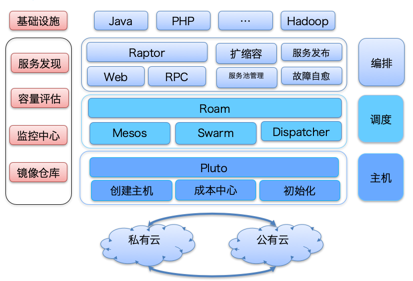
基础设施层
DCP中基础设施层主要用于提供各种基础设施，以保证其他层功能的正常运行。通常来讲，主要包括以下几个基础组件：用于存放容器镜像的镜像仓库、提供监控服务的监控中心、实时监控系统容量以便于自动扩缩容的容量评估系统以及容器创建后，如何加入线上服务的服务发现组件，其中镜像仓库是DCP最核心的基础组件。
正如[专栏第26期]我讲的那样，DCP以开源镜像仓库Harbor为基础搭建了私有的镜像仓库，不过由于微博业务的特征，为了应对随时可能到来的突发峰值流量的冲击，需要随时随地能够扩容服务池。但在内网冗余度不足的时候，也不得不借助公有云来实现，因此服务不仅在内网私有云上有部署，在阿里云上也有部署，这样的话从阿里云申请的主机也需要从镜像仓库中拉取镜像。此时，如果镜像仓库只在内网部署的话，就需要跨专线去拉取镜像，但如果上百台服务器同时拉取镜像，带宽占用很可能达到上百G，由于专线带宽是有限的，显然这样不可取。为此，正确的做法就像下图中那样，在阿里云机房也部署一套镜像仓库，并且通过Harbor的主从复制机制与内网的镜像仓库保持同步。同时，为了做到负载均衡，每个机房内部都部署了多个Harbor节点，内网节点访问内网镜像仓库会通过LVS进行负载均衡，阿里云上节点访问阿里云镜像仓库会通过SLB进行负载均衡，以满足镜像仓库的带宽需求。
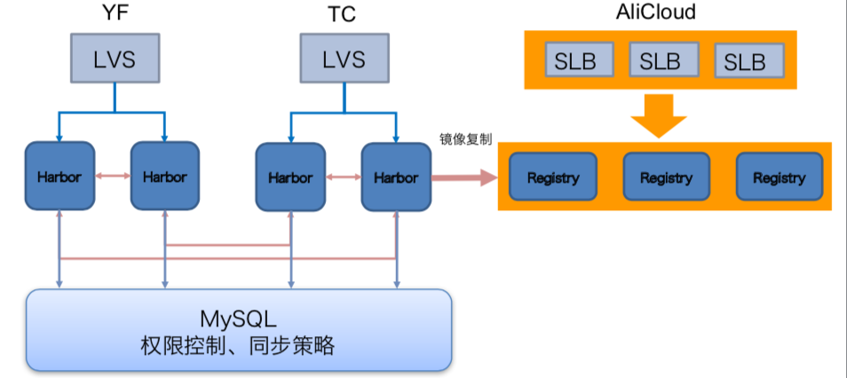
主机层
DCP中主机层的功能主要是为了完成资源的调度，也就是针对不同的集群，完成主机的创建、成本的管理以及配置初始化工作，也叫Pluto层。前面提到过微博业务不仅在内网私有云上有部署，而且在阿里云上也有部署，为此Pluto需要适配不同底层提供的创建主机的API，进行成本核算并且进行配置初始化操作。Pluto层的架构你可以参看下图，我来详细讲一下。
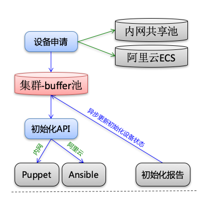
1.主机创建
Pluto在创建主机时，主要有两个来源，一个是内部物理机组成的共享池，一个是调用阿里云API创建ECS。其中共享池内的资源主要来源于两部分：一部分是冗余度高的服务池缩容部分主机加入到共享池；一部分是在线业务和离线计算互相补充，比如白天在线业务需要的机器多，而离线计算的任务主要运行在凌晨，这时候就可以在白天把离线计算的集群的部分机器加入到共享池给在线业务使用，而在晚上业务低峰期把在线业务的部分机器加入到共享池给离线计算任务使用。而使用阿里云创建ECS，主要是在共享池内的资源不足的情况下，比如有突发热点事件到来，各个服务池都需要紧急扩容，这时候共享池内的资源就不足以应对了。而使用阿里云API创建ECS会受到阿里云API的各种限制，下面我列举几个微博在使用阿里云创建机器时所遇到的问题，你就可以理解主机创建的复杂性所在了。
- 由于阿里云API对单账户的调用有并发限制，所以实际业务在创建阿里云ECS上时，不能上百台同时创建，一般要控制在几十台的规模左右，如果这个时候业务需要创建上百台机器该怎么做呢？那就需要采取队列机制，来控制机器创建的速度。下面这张图就描述了微博在使用阿里云创建ECS时的解决方案，在实际创建ECS时，不会立即调用阿里云API，而是把节点创建任务先放到一个DB队列中，然后再通过一个线程定时从DB队列中获取创建任务，每次只创建几十台，这样的话就不会触发阿里云API对单账号调用的并发限制。
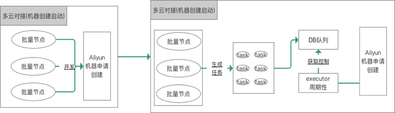
- 除了有单账户调用的并发限制，还会有可用区的库存限制、安全组库存限制以及vSwitch库存限制，所以在实际使用阿里云API创建ECS时，当机器规模较大，如果直接指定使用某个可用区、安全组和vSwitch，就可能因为库存原因导致创建失败。微博一开始就使用了这种方案，但在突发峰值流量来临时，往往要创建几百台甚至上千台的阿里云ECS，为此经常会因为以上限制导致创建失败。后来针对可用区、安全组以及vSwitch都做了多可用区、多安全组以及多vSwtich配置，在出现库存不够时，就自动切换到别的地方来创建，极大提高了大规模ECS创建的成功率。
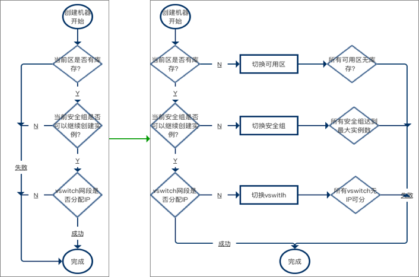
2.成本管理
无论是从共享池内创建的机器，还是调用阿里云API创建的ECS，都是有成本的，为此必须对机器的数量以及使用时长进行记录，以便进行成本管理。
以阿里云的ECS为例，又分为按量付费、按月付费以及按年付费，可以按照以下方式来进行管理。
按量付费。按照使用时长，以秒为单位计费，适合突发流量到来临时需要扩容部分机器时使用，所以需要记录每台ECS从调用API创建成功到销毁所使用的时长。
按月付费。这种比较适合短期业务需要使用机器的场景，比如微博曾经在奥运会期间扩容过大量包月付费的机器，以应对奥运会期间带来的流量上涨。需要注意的是，这种机器到了月底会自动销毁，所以如果还有使用需要的话，需要及时续费。
按年付费。这种比较适合需要长期在阿里云上部署的业务，比如有一些新的业务因为业务发展比较快，采用传统自采机器部署的话，由于采购周期比较长不适合业务发展，所以使用公有云更为合适。
3.配置初始化
主机创建完成后，还要进行一些基础软件的安装以及配置修改等工作，这就是配置初始化的过程。以阿里云创建的ECS为例，如果短时间内创建了上千台ECS，这个时候配置初始化的工作量会非常大，需要同时给上千台ECS下发配置文件并安装基础软件，同时还需要记录每台ECS的初始化状态到DB，以便查询是否初始化成功。下图描述了初始化的过程，DCP在进行主机配置初始化时，会通过Ansible向所有主机下发配置文件和基础软件，并通过自定义callback queue，把每台主机的初始化状态异步写入到DB中，避免上百台机器同时并发写入DB造成死锁。
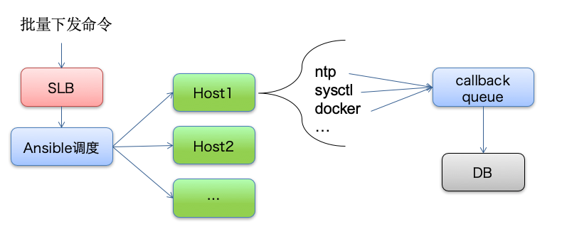
调度层
DCP中调度层的主要功能是在可用的主机上创建容器。由于微博业务早在2013年就开始进行容器化，基于当时的背景考虑，就选择了Swarm作为容器调度的工具，并根据自己的业务特点在Swarm基础上进行二次封装，定制了自己的调度层Roam，使其具备支持跨IDC、高可用以及可扩展的特性。下面是Roam的架构，其主要工作原理是：
Swarm Manager和Swarm Client节点都向Consul中注册，并且有一个Active Manager和Standby Manager。任何一个IDC内的Active Manager如果down掉的话，Standby Manager就会注册到Consul中，成为新的Active Manager，以保证高可用性。
当发起容器调度时，Roam根据IDC参数请求Consul，得到该IDC的Swarm Manager信息。
Roam访问该IDC内的Swarm Manager，Swarm Manager再访问Consul获取Swarm Client信息，并根据Roam传递的调度策略从Swarm Client中选择节点创建容器。
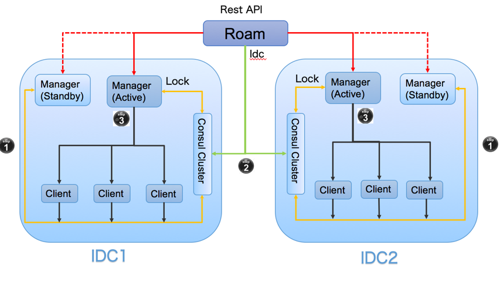
编排层
DCP中编排层的主要作用是对服务进行整合以对外提供服务，主要包括服务依赖、服务发现以及自动扩缩容，下面我来详细介绍每一部分的具体实现。
1.服务依赖
DCP通过模板来管理容器的创建，一个服务如果需要进行扩容、创建容器，就必须按照模板里定义的参数来执行，以下图描述的DCP里的一个扩容任务创建模板为例，通常来讲，模板里定义的参数主要包括几个部分：任务的名称、机器的配置、任务依赖、任务详细配置（包括调用阿里云API创建ECS时的可用区、安全组参数等），其中任务依赖的配置项是：
{"Sid":1707061842070000,"Ratio":0.2,"ElasticCount":0}
{"Sid":1703271821000000,"Ratio":0.3,"ElasticCount":0}
它的含义是执行这个扩容任务时，会自动执行ID为1707061842070000和1703271821000000的扩容任务，并且按照每扩容10台容器分别扩容2台和3台依赖容器的比例来执行。
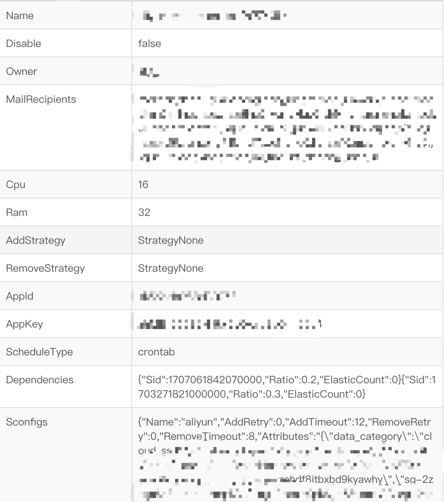
2.服务发现
微博的业务场景主要包含两种服务，一种是HTTP服务，一种是Motan RPC服务，他们分别使用了不同的服务发现方式。
HTTP服务。考虑到传统的基于Nginx的配置Reload机制实现的服务发现方式，在高并发访问的情况下，会导致吞吐量下降10%左右，如果业务频繁变更的话，就会受到影响。为此，DCP在实际业务中基于Nginx和Consul研发了一种可行的解决方案nginx-upsync-module，并且已经开源。
Motan RPC服务。Motan RPC服务在启动时，会向注册中心Config Service注册服务，并且注册中心支持多IDC部署。像下图所描述的那样，正常情况下服务消费者会访问同一个IDC内的服务提供者，并且支持在故障的时候，可以切换到其他IDC。
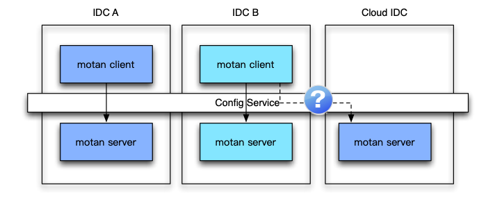
3.自动扩缩容
DCP系统实现自动扩缩容主要依靠的是容量决策支持系统，由容量决策支持系统来实时监控系统的容量。如下图所示，一旦容量决策支持系统检测到某个服务需要进行扩容，就会创建扩容任务，Config Watcher会监控到扩容任务，并通知CronTrigger有调度策略变更。CronTrigger接到扩容任务，就会调用Scheduler来具体执行扩容。同时还可以通过API来修改、查询扩缩容的信息，也可以通过UI来操作。
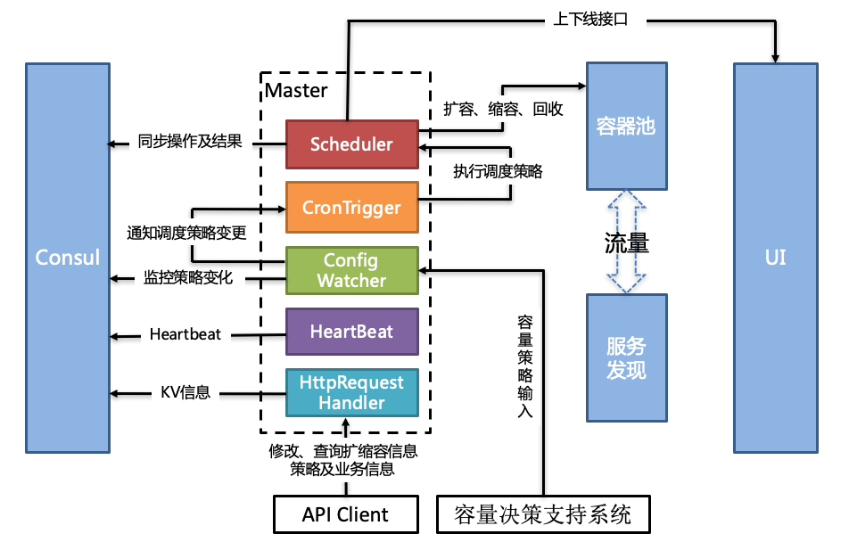
总结
今天我给你讲解了微博容器运维平台DCP的架构，主要包括基础设施层、主机层、调度层以及编排层，并详细介绍了每一层的功能实现，以及各自承担的不同职能。下面这张图是一次完整扩容流程，包括了资源评估、配额评估、初始化、容器调度、部署服务、服务依赖、服务发现以及自动扩缩容等，DCP正是通过把这些过程串联起来，实现容器运维的。
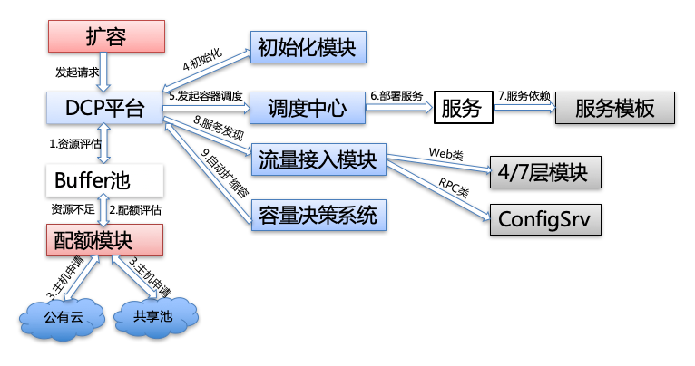
思考题
在讲到服务编排时，我提到服务之间会存在依赖关系，比如服务A依赖服务B，假如此时服务A的流量上涨，需要对服务A进行扩容，这时候有两种方案：一种方案是通过自动扩缩容，服务A和服务B的扩容完全独立，分别按需自动扩缩容；一种方案是通过服务依赖，扩容服务A之前先扩容服务B，你认为这两种方案哪种更好？为什么？
欢迎你在留言区写下自己的思考，与我一起讨论。
© 2019 - 2023 Liangliang Lee. Powered by gin and hexo-theme-book.